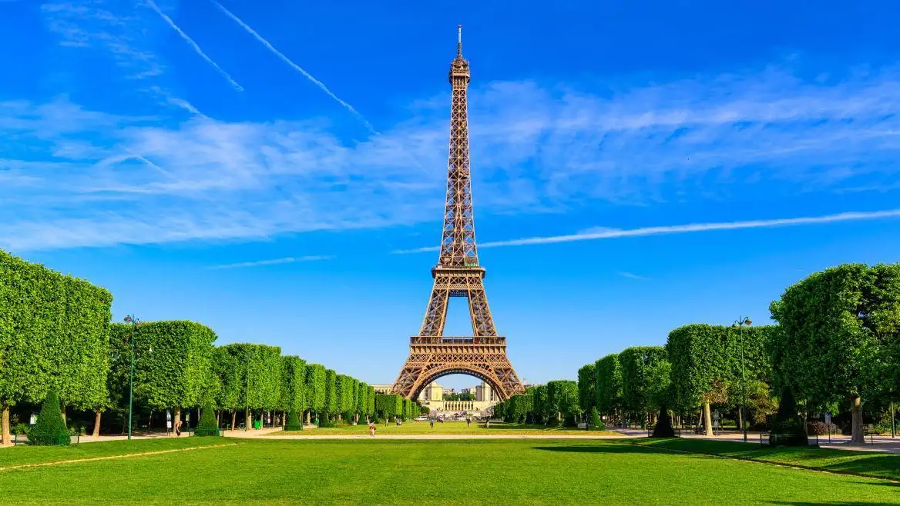

La Tour Eiffel
Source: Site officiel Tour Eiffel
La France

France is a country in Western Europe renowned for its cuisine, fashion, and iconic monuments. Its history has influenced the entire world. It is the most visited country in the world.
French culture varies greatly depending on the region and its history. France established colonies around the world.
Some french specialties
- Culinary specialties are recognized around the world, and some can only be made in France. Champagne is one such example. Champagne is a protected designation of origin, meaning that only champagnes made from grapes grown in the Champagne region can bear this name.
- Acras, also known as “marinades” in the West Indies and French Guiana, are of African origin. In Guadeloupe, Haiti, and Martinique, they are light, soft, and crispy, and can be mild or spicy.
- In France, croissant dough is a leavened puff pastry similar to that used for pains au chocolat. It uses the same principles as normal puff pastry, except that the dough contains baker's yeast.
- Bouillabaisse is a traditional and iconic culinary speciality of Mediterranean Provençal cuisine. Originating in Marseille, it consists of a fish soup accompanied by garlic-rubbed bread croutons.
Country Characteristics
| Characteristics | Detail |
|---|---|
| Location | Europe |
| Capital | Paris |
| Official language | French |
| Currency | Euro (€) |
| Flag | Blue, White, Red |
| Population | 68,5 millions |
Some monuments
1 / 3



(Use left arrow key or right arrow key to see more monuments)
For more information, visit the official website to explore France.